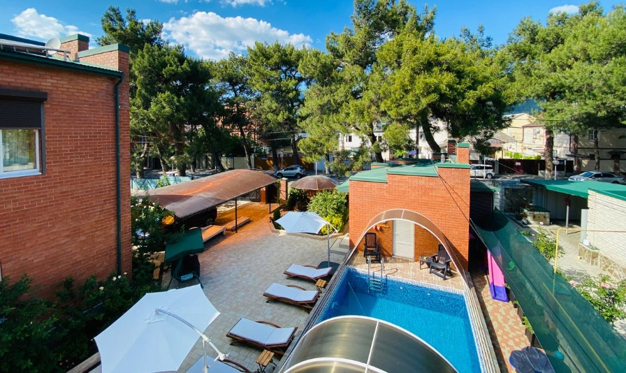
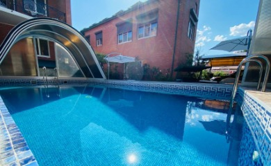
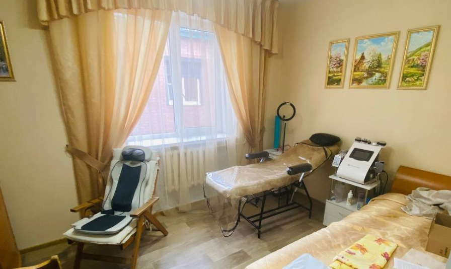
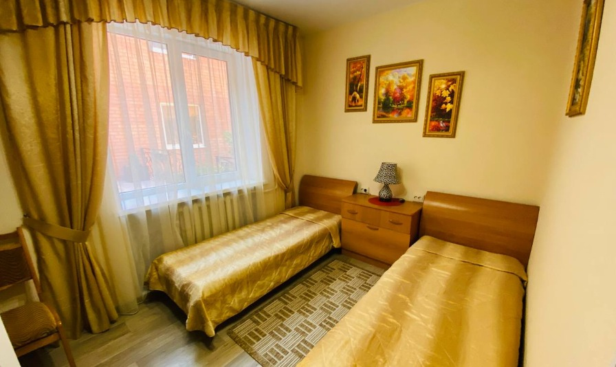
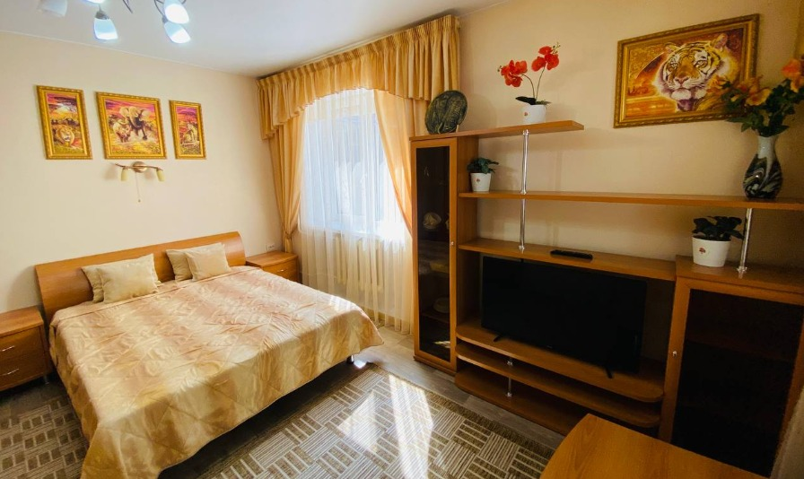
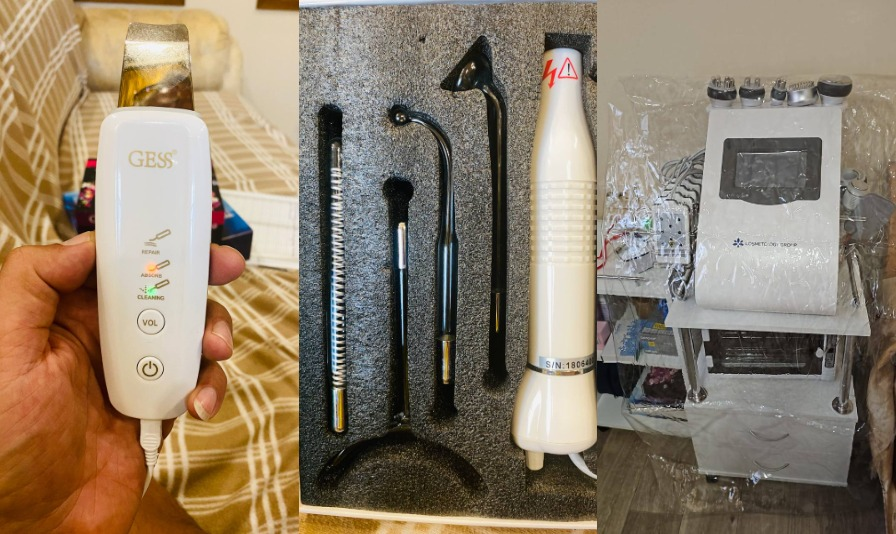
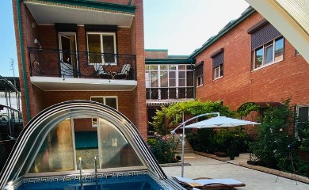
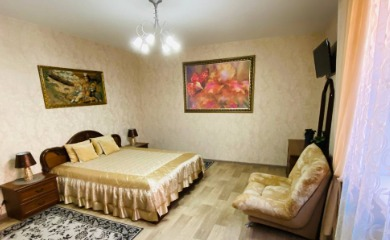
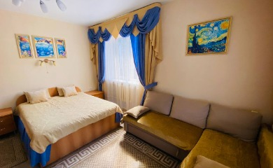
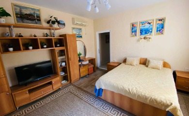
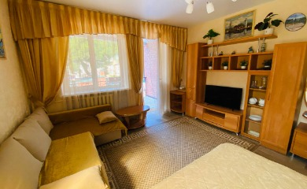
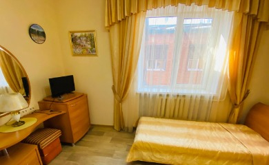

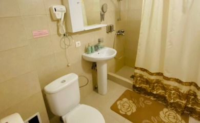
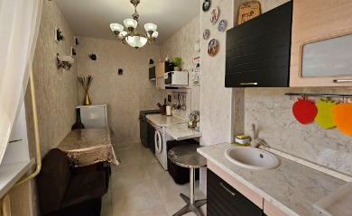

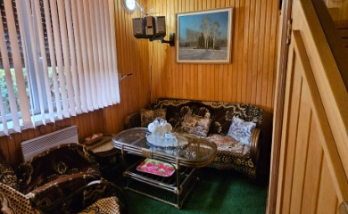
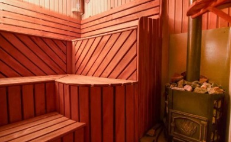
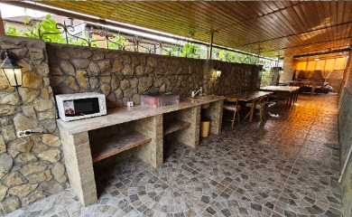
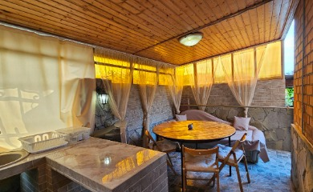
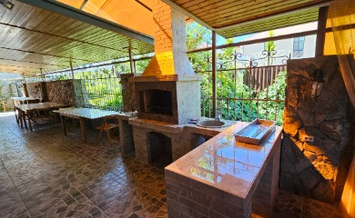
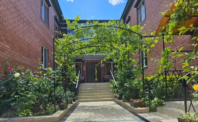
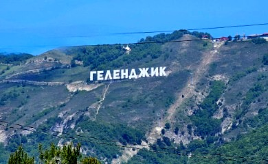
АтмаЛюкс - Геленджик
Восстанови здоровье природными силами – эффективное исцеление без лекарств.
Мы предлагаем уникальные методы исцеления и профилактики заболеваний, основанные на проверенных временем практиках альтернативной, нетрадиционной и народной медицины. В отличие от традиционных клиник, мы фокусируемся на целостном подходе к здоровью, используя натуральные средства и древние знания о теле и душе.
Преимущества:
- Индивидуальный подход. Мы разрабатываем программы оздоровления, учитывая особенности вашего организма и образа жизни.
- Без побочных эффектов. Наши методики основаны на природных компонентах и процедурах, исключающих негативное воздействие на организм.
- Комплексный эффект. Оздоровление направлено не только на устранение симптомов, но и на восстановление баланса всего организма.
- Опытные специалисты. Наша команда состоит из мастеров, имеющих многолетний опыт работы в области альтернативной и нетрадиционной медицины.
Наши клиенты это люди, стремящиеся к естественному восстановлению здоровья, ищущие альтернативу традиционной медицине, желающие улучшить качество своей жизни через гармоничное сочетание тела, разума и духа.
Запишитесь на бесплатную консультацию уже сегодня и сделайте первый шаг к здоровому будущему!
Омоложение у самого Черного моря – ваша красота в руках природы и технологий.
У нас есть уникальные процедуры аппаратной косметологии, сочетающие современные технологии и природные ресурсы собранные с разных уголков планеты от традиционных до экзотических.
Наши преимущества:
- Аппаратная косметология премиум-класса. Используем новейшие аппараты и передовые методики для достижения видимых результатов.
- Природные факторы. Морской Воздух наполненный озоном и отрицательными ионами, близость воды и уникальные косметические средства насыщенные “живыми” минералами, способствует усилению эффекта процедур и общему расслаблению.
- Персонализированный подход. Разработаем программу омоложения, исходя из ваших индивидуальных потребностей и пожеланий.
- Комфорт и уют. Наслаждайтесь процедурами в спокойной атмосфере, забывая о повседневной суете.
Наши гости - это женщины и мужчины, ценящие красоту, здоровье и комфорт, а также стремящиеся к эффективному омоложению с использованием современных технологий и знаний оставленных нам прошлыми веками.
Забронируйте процедуру уже сейчас и подарите себе незабываемый результат омоложения на Черном море!
Похудение в союзе науки и природы – возвращайте стройность, красоту и здоровье.
Сочетание научных знаний и уникальных методик исцеления с применением натуральных средств. Мы используем максимально комфортный для вас подход, чтобы вернуть вам здоровье и стройность.
Наши преимущества:
- Научный подход. Все наши программы разработаны на основе последних исследований в области диетологии, физиологии и психологии.
- Нетрадиционные методы. Применяем проверенные временем практики, такие как фитотерапия, ароматерапия, аппаратная косметология, физиотерапия, магнитотерапия и другие натуральные способы снижения веса.
- Персональные планы. Разрабатываем индивидуальные программы, учитывающие ваши цели, образ жизни и состояние здоровья.
- Поддержка специалистов. Вас будут сопровождать опытные мастера, помогая преодолеть трудности и достичь желаемых целей.
- Естественные результаты. Никаких экстремальных диет и изнурительных тренировок – только безопасные и устойчивые изменения, ведущие к долгосрочному результату.
Запишитесь на консультацию и получите персональную программу снижения веса и дальнейшего поддержания достигнутого вами результата.
Магнитное поле включает эффект антиоксидации, замедляющий увядание, рыхлость, старение. Запуск работы внутреннего коллагена
Результат, который вас ждёт:
- уменьшения объемов тела и веса, при этом на коже не остается синяков и провалов
- ускорение процесса метаболизма (очищение лимфатической системы), включая элиминацию продуктов распада и излишней жидкости из тела
- улучшение и восстановление тургора кожи на различных участках тела и после беременности
- устранение эффекта «апельсиновой корки» и растяжек
- моделирование фигуры и повышение эластичности мышц
Аудиенция проходит в «живом» магнитном поле на единственном в России и СНГ магнитном, косметическом кресле, что дает самый быстрый и безвозвратный эффект коррекции фигуры
Цена от ??? ₽
Улучшение состояния кожных покровов и омоложения лица, зоны декольте и всего тела за счет активизации глубоких слоев кожи в «живом» магнитном поле
Ваш результат:
- стимуляция синтеза внутренних коллагеновых и эластиновых волокон
- улучшение снабжения кожи кислородом
- улучшения цвета лица, придание здорового блеска
- уменьшение глубоких и разглаживание мимических морщин
- устранение отечности и мешков в области глаз
- выравнивание формы лица
- устранение провисания кожи
- омоложения кожи вокруг глаз
Коррекции лицевого овала.
Избавления от кожных дефектов (морщин, запомов и пр.)
Омоложения зоны докольте.
Избавпения от растяжек и целлюпита в области живота и бедер.
Результаты заметны после первой же проведенной процедуры
Цена от ??? ₽
Формирование мышечного рельефа без реальных активных тренировок. Активизация определенных мышц без загрузки других частей тела. Эффект «ленивой физической зарядки»
Ваши результаты для тела:
- восстановление мышечной ткани микротоковой, магнитной миостимуляцией
- улучшение внешнего вида кожи за счет восстановления правильных процессов метаболизма
- улучшения питания кожи и подкожных тканей
- придание силы и упругости мускулатуре на разных участках тела
- повышение тонуса мышц
- улучшение качества кожной структуры
- эффект лифтинга
- снятие спазмов и зажимов в мышечной ткани
- устранение целлюлитных образований
- ускорение реакций расщепления жировых отложений
- уменьшение количества и выраженности растяжек
Цена от ??? ₽
Лазерный липолиз в «живом» магнитном поле – единственная в России лазерная процедура по коррекции и улучшению фигуры без нарушения целостности ткани
Ваш солнечный эффект после:
- улучшенный тонус кожи
- сокращение целлюлита
- начало утилизации жировой ткани
- подъём микроциркуляции и лимфооттока
- восстановление и стойкое сохранение изящного вида тела
- особенно выражен эффект после применения в зонах внутренней поверхности рук, шеи, задней поверхности грудной клетки, щек и области подбородка
Цена от ??? ₽
Микротоковая, магнитная фокусировка - это мягкое воздействие на клетки кожи, сосуды и мышечную ткань микроимпульсами в «живом» магнитном поле.
Результаты заберете с собой в виде:
– активизации воздействия на эпидермис кожи, приводящей к усилению всех клеточных процессов без косметических средств, БАДов, хирургии и прочих химических, кратковаременных процедур.
Эффекты для лица и зоны декольте:
- улучшение кровообращения
- усиление лимфодренажной функции
- устранение мышечных спазмов
- восстановление тонуса ослабленных мышц
- нормализация циркуляции жидкости
- восстановление внутриклеточного метаболизма
- насыщение клеток питательными веществами за счет активизации естественных процессов
- увеличение выработки коллагена, эластина и АТФ (источника энергии клеток)
- регенерация кожных покровов
- уменьшение отеков и темных кругов под глазами
- нормализация работы сальных желез и противовоспалительное действие
- воздействие на рубцовую ткань после акне
- уменьшение глубины морщин и устранение мимических морщин
Цена от ??? ₽
Формирование мышечного рельефа без реальных активных тренировок (активизация определенных мышц без нагрузки других частей тела)
Результаты от «ленивой физической зарядки» вас обрадуют:
- придание силы и упругости мускулатуре на разных участках тела
- повышение тонуса мышц
- улучшение качества кожной структуры
- эффект лифтинга
- снятие спазмов и зажимов в мышечной ткани
- ускорение реакций расщепления жировых отложений
Цена от ??? ₽
Биофотон — процедура, предназначенная для улучшения эластичности кожи, общего омоложения кожи. Повышает эластичность, стимулирует процессы жирорасщепления и уменьшения объемов жировой ткани, запускает мощный лимфодренаж. Стимулирует работу мышц.
Биофотон используется для решения широкого спектра кожных проблем.
Среди них:
- терапия акне, постакне
- розацеа
- фотостарение, гиперпигментация
- хронические дерматозы
Все сеансы проходят в «живом» магнитном поле на единственном в России и СНГ магнитном кресле.
Цена от ??? ₽
Мягкий и комфортный способ очистить и омолодить кожу, сделать текстуру кожи более гладкой, придать ей сияние, разгладить рубцы и растяжки. Вакуумный, алмазный пилинг в «живом» магнитном поле ― одна из самых популярных сегодня эстетических процедур. Она безопасна и безболезненна. Результат заметен после первой же процедуры и сохраняется длительное время.
Сессия даст результат у кого:
- мелкие и глубокие морщины и складки
- жирная кожа с крупными порами (чистка лица)
- состояние постакне
- гиперкератоз (чрезмерное утолщение рогового слоя кожи)
- следы гиперпигментации
- атрофические и гипертрофические рубцы
- шрамы и растяжки, следы после ожогов, татуировок
Цена от ??? ₽
Аппаратная, антивозрастная косметология помогает бороться со снижением тонуса кожи, устраняет неглубокие морщины, а также стимулирует синтез каркасных белков кожи, типа коллагена и эластина, что делает ее более плотной и подтянутой. Для этого используем различные ультрозвуковые технологии, аппаратные пилинги, микротоки.
Консультация специалиста 30 мин - 520 ₽
Безоперационная липосакция
Метод воздействия ультразвуковых волн на жировые клетки без возможности их последующего восстановления.
Эффект ультразвуковой кавитации:
- коррекция фигуры в виде уменьшения объемов тела и веса, при этом на коже не остается синяков и провалов
- ускорение процесса метаболизма (очищение лимфатической системы), включая элиминацию продуктов распада и излишней жидкости из тела
- улучшение и восстановление тургора кожи на различных участках тела, а также после беременности
- устранение эффекта «апельсиновой корки» и растяжек
- моделирование фигуры и повышение эластичности мышц
Цена 30 мин одной зоны 1520 ₽
Методика улучшения состояния кожных покровов за счет активизации глубоких слоев кожи.
Омоложение лица и тела
Эффект процедуры для лица:
- стимуляция синтеза коллагеновых и эластиновых волокон
- улучшение снабжения кожи кислородом
- улучшения цвета лица, придание здорового блеска
- уменьшение глубоких и разглаживание мимических морщин
- устранение отечности и мешков в области глаз
- выравнивание формы лица
- устранение провисания кожи
Эффект процедуры для тела:
- лечение целлюлита в области бедер и ягодиц
- уменьшение объема жировой ткани в проблемных зонах (плечи, живот, бедра, ягодицы, колени)
- восстановление упругости и эластичности кожи за счет повышения уровня коллагена
- сокращение растяжек
- подтяжка дряблой кожи (при обвисании живота)
Цена от 1020 ₽
Коррекция фигуры
Уникальная лазерная процедура по улучшению фигуры без нарушения целостности ткани.
Эффект для тела:
- улучшение тонуса кожи
- уменьшение проявления целлюлита
- постепенное разрушение жировой ткани
- улучшение микроциркуляции и лимфооттока
- восстановление и сохранение изящного вида тела
- особенно выражен эффект после применения в зонах внутренней поверхности рук, шеи, задней поверхности грудной клетки, щек и области подбородка
Цена от 30 мин до 1.5ч от 1520 ₽
Активизация эпидермиса кожи
Мягкое воздействие на клетки кожи, сосуды и мышечную ткань импульсным током невысокого напряжения с разными частотами, что приводит к усилению всех клеточных процессов.
Эффект для лица и зоны декольте:
- улучшение кровообращения
- усиление лимфодренажной функции
- устранение мышечных спазмов
- восстановление тонуса ослабленных мышц
- нормализация циркуляции жидкости
- восстановление внутриклеточного метаболизма
- насыщение клеток питательными веществами за счет активизации естественных процессов
- увеличение выработки коллагена, эластина и АТФ (источника энергии клеток)
- регенерация кожных покровов
- уменьшение отеков и темных кругов под глазами
- нормализация работы сальных желез и противовоспалительное действие
- воздействие на рубцовую ткань после акне
- уменьшение глубины морщин и устранение мимических морщин
Цена ??? ₽
Формирование мышечного рельефа
«Ленивая физическая зарядка» без реальных активных тренировок (активизация определенных мышц без нагрузки других частей тела)
Эффект для лица и тела:
- восстановление мышечной ткани
- улучшение внешнего вида кожи за счет восстановления правильных процессов метаболизма
- улучшения питания кожи и подкожных тканей
- придание силы и упругости мускулатуре на разных участках тела
- повышение тонуса мышц
- улучшение качества кожной структуры
- эффект лифтинга
- снятие спазмов и зажимов в мышечной ткани
- устранение целлюлитных образований
- ускорение реакций расщепления жировых отложений
- уменьшение количества и выраженности растяжек
Цена от 30 мин до 1ч - 1230 ₽
Технология омоложения
Уникальная методика омоложения, основанная на лечебных свойствах света, обработка световыми лучами заданной длины, которая запускает в коже обновления, при воздействии световых лучей в старых и дефектных эпителиоцитах запускается фотохимическая реакция, в результате которой образуется активный кислород.
Эффект для лица и тела:
- омоложение и лифтинг эффект на коже лица и груди
- уменьшение рыхлости кожи
- активизация клеток и ускорение циркуляции лимфы
- ускорение процесса расщепления жировых отложений
- уменьшение сосудистой сетки
- ускорение регенерации клеток в кожных покровах
- улучшение клеточного дыхания
- стимуляция выработки собственного меланина, кожа приобретёт ровный и здоровый цвет и тон
- уменьшение кожных воспалений различной этиологии
- расширение капиллярных сосудов
- подтяжка кожи вокруг глаз.
Цена от 15 мин до 1ч от 630 ₽
Устранение проблем кожи
Процедура использования холода для лечения различных проблем кожи и облегчения болей, его действие помогает не только освежить внешний вид, но и решить ряд медицинских задач.
Эффект для лица и тела:
- придание гладкости кожным покровам
- разглаживание мелких морщин
- улучшение тонуса кожи
- сужение пор
- устранение отечности тканей
- снимает покраснения
- устранение хронических болей и усталости в мышцах
от 10 минут в подарок
Очистка и омоложение кожи
Мягкий и комфортный способ очистить и омолодить кожу, сделать текстуру кожи более гладкой, придать ей сияние, разгладить рубцы и растяжки. Вакуумный, Алмазный пилинг в «живом» магнитном поле ― одна из самых популярных сегодня эстетических процедур. Она безопасна и безболезненна. Результат заметен после первой же процедуры и сохраняется длительное время.
Сессия даст результат у кого:
- мелкие и глубокие морщины и складки
- жирная кожа с крупными порами (чистка лица)
- состояние постакне
- гиперкератоз (чрезмерное утолщение рогового слоя кожи)
- следы гиперпигментации
- атрофические и гипертрофические рубцы
- шрамы и растяжки, следы после ожогов, татуировок
Цена от 30 мин 1520 ₽
Метод воздействия ультразвуковых волн на жировые клетки без возможности их последующего восстановления.
Эффект ультразвуковой кавитации:
- коррекция фигуры в виде уменьшения объемов тела и веса, при этом на коже не остается синяков и провалов
- ускорение процесса метаболизма (очищение лимфатической системы), включая элиминацию продуктов распада и излишней жидкости из тела
- улучшение и восстановление тургора кожи на различных участках тела, а также после беременности
- устранение эффекта «апельсиновой корки» и растяжек
- моделирование фигуры и повышение эластичности мышц
Цена 30 мин одной зоны 1520 ₽
Методика улучшения состояния кожных покровов за счет активизации глубоких слоев кожи.
Эффект процедуры для лица:
- стимуляция синтеза коллагеновых и эластиновых волокон
- улучшение снабжения кожи кислородом
- улучшения цвета лица, придание здорового блеска
- уменьшение глубоких и разглаживание мимических морщин
- устранение отечности и мешков в области глаз
- выравнивание формы лица
- устранение провисания кожи
Эффект процедуры для тела:
- лечение целлюлита в области бедер и ягодиц
- уменьшение объема жировой ткани в проблемных зонах (плечи, живот, бедра, ягодицы, колени)
- восстановление упругости и эластичности кожи за счет повышения уровня коллагена
- сокращение растяжек
- подтяжка дряблой кожи (при обвисании живота)
Цена от 1020 ₽
Уникальная лазерная процедура по улучшению фигуры без нарушения целостности ткани.
Эффект для тела:
- улучшение тонуса кожи
- уменьшение проявления целлюлита
- постепенное разрушение жировой ткани
- улучшение микроциркуляции и лимфооттока
- восстановление и сохранение изящного вида тела
- особенно выражен эффект после применения в зонах внутренней поверхности рук, шеи, задней поверхности грудной клетки, щек и области подбородка
Цена от 30 мин до 1.5ч от 1520 ₽
Мягкое воздействие на клетки кожи, сосуды и мышечную ткань импульсным током невысокого напряжения с разными частотами, что приводит к усилению всех клеточных процессов.
Эффект для лица и зоны декольте:
- улучшение кровообращения
- усиление лимфодренажной функции
- устранение мышечных спазмов
- восстановление тонуса ослабленных мышц
- нормализация циркуляции жидкости
- восстановление внутриклеточного метаболизма
- насыщение клеток питательными веществами за счет активизации естественных процессов
- увеличение выработки коллагена, эластина и АТФ (источника энергии клеток)
- регенерация кожных покровов
- уменьшение отеков и темных кругов под глазами
- нормализация работы сальных желез и противовоспалительное действие
- воздействие на рубцовую ткань после акне
- уменьшение глубины морщин и устранение мимических морщин
Цена ??? ₽
«Ленивая физическая зарядка» без реальных активных тренировок (активизация определенных мышц без нагрузки других частей тела)
Эффект для лица и тела:
- восстановление мышечной ткани
- улучшение внешнего вида кожи за счет восстановления правильных процессов метаболизма
- улучшения питания кожи и подкожных тканей
- придание силы и упругости мускулатуре на разных участках тела
- повышение тонуса мышц
- улучшение качества кожной структуры
- эффект лифтинга
- снятие спазмов и зажимов в мышечной ткани
- устранение целлюлитных образований
- ускорение реакций расщепления жировых отложений
- уменьшение количества и выраженности растяжек
Цена от 30 мин до 1ч - 1230 ₽
Уникальная методика омоложения, основанная на лечебных свойствах света, обработка световыми лучами заданной длины, которая запускает в коже обновления, при воздействии световых лучей в старых и дефектных эпителиоцитах запускается фотохимическая реакция, в результате которой образуется активный (синглетный) кислород. Процедура проходит в “живом” магнитном поле на единственном в России и СНГ магнитном косметологическом кресле.
Эффект для лица и тела:
- омоложение и лифтинг эффект на коже лица и груди
- уменьшение рыхлости кожи
- активизация клеток и ускорение циркуляции лимфы
- ускорение процесса расщепления жировых отложений
- уменьшение сосудистой сетки
- ускорение регенерации клеток в кожных покровах
- улучшение клеточного дыхания
- стимуляция выработки собственного меланина, кожа начнет светиться изнутри, приобретая ровный и здоровый цвет и тон
- уменьшение кожных воспалений различной этиологии
- расширение капиллярных сосудов
- подтяжка кожи вокруг глаз и уменьшение темных кругов под глазами
Цена от 15 мин до 1ч от 630 ₽
Процедура использования холода для лечения различных проблем кожи и облегчения болей, его действие помогает не только освежить внешний вид, но и решить ряд медицинских задач.
Эффект для лица и тела:
- придание гладкости кожным покровам
- разглаживание мелких морщин
- улучшение тонуса кожи
- сужение пор
- устранение отечности тканей
- снимает покраснения
- устранение хронических болей и усталости в мышцах
от 10 минут в подарок
Мягкий и комфортный способ очистить и омолодить кожу, сделать текстуру кожи более гладкой, придать ей сияние, разгладить рубцы и растяжки. Вакуумный, Алмазный пилинг в «живом» магнитном поле ― одна из самых популярных сегодня эстетических процедур. Она безопасна и безболезненна. Результат заметен после первой же процедуры и сохраняется длительное время.
Сессия даст результат у кого:
- мелкие и глубокие морщины и складки
- жирная кожа с крупными порами (чистка лица)
- состояние постакне
- гиперкератоз (чрезмерное утолщение рогового слоя кожи)
- следы гиперпигментации
- атрофические и гипертрофические рубцы
- шрамы и растяжки, следы после ожогов, татуировок
Цена от 30 мин 1520 ₽
Если есть вопросы или хотите узнать дополнительную информацию - свяжитесь с нами!
Знает свое призвание и следует по этому пути год за годом. Во время встречи с ней вы получите пользу не только для тела, но и для души. Поскольку, решить сложную психологическую или жизненную ситуацию вам еще не получилось, то ее помощь и поддержка будет для вас ценным подарком в переходе на новую, комфортную и счастливую линию жизни. Внимание, приготовьтесь! Ваши друзья, знакомые, близкие люди и коллеги начнут вам очень скоро завидовать
Телефон, WhatsApp
+7 929 868 12 50
Избавит от телесных и душевных хворей, остановит боль и вернет то, что отнял некомфортный образ жизни, вредные привычки, нужда, стресс, усталость. Начать жить свою жизнь в красоте, достатке, комфорте, со счастьем - это его обязанность. Приведет в порядок ваше тело, психику, биохимию, отношения, настроение, мысли, чувства, эмоции. Умеет делать «на отлично» всё, к чему призвал Создатель. Приносит пользу вам уже 22 года.
Мы постарались собрать со всего мира всё самое прекрасное и полезное в одном месте, для максимальной пользы и экономии времени.
Наш метод совместил аппаратную косметологию, истинное целительство, «живое» магнитное поле, фитотерапию, банную терпию, травничество с возможностью проживания в уютных номерах комфорт-класса и полулюкс, в центре города-курорта Геленджик. В наличии 5 номеров на 14 гостей.
Исцеление от боли в спине, пояснице, плечах, шее, суставах.
Если у вас тугоподвижность суставов, хруст, снижение активности, то у нас есть средства вам помочь.
Освобождение от недуга происходит при помощи воздействий на проблемные места “живого” магнитного поля, с использованием медицинских магнитов с силой до 4000 Гаусс. Обязательно приготовлю, под решение вашей проблемы, некоторые стерильные противоядия в виде: биоэликсира, капель, кремов, мазей, растирок, втираний, паст и желе.
Эрекция, проспермия, пиоспермия, астенозооспермия, ложная астенозооспермия.
Возврат угасающего либидо.
Проблемы с зачатием, избавление от последствий климакса и менопаузы.
Используютя эффективные и природные средства
Процесс оздоровления и восстановления занимает от 3-5 дней до года. В него входят сеансы (у нас или самостоятельно, дома) с использованием медицинских магнитов, приготовления под решение вашей проблемы стерильных биоэликсиров, капель и паст.